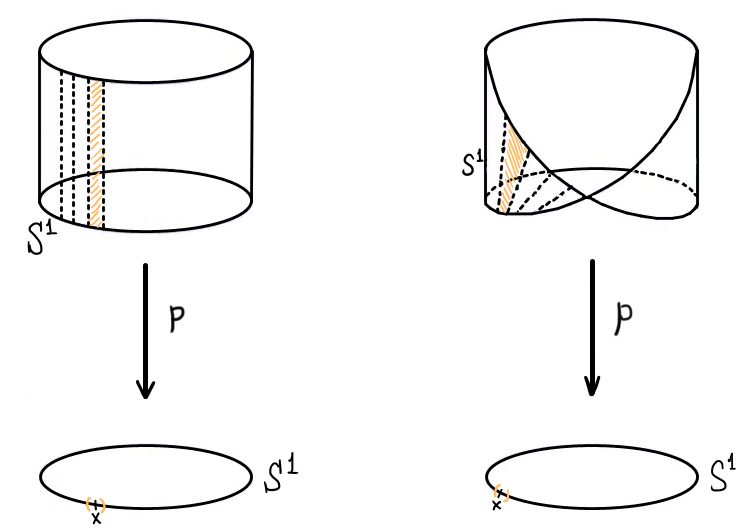

Fibrados e Recobrimentos
Fibrados
Um fibrado é uma aplicação contínua $\pi \colon E \to B$ tal que existe um outro espaço $F \neq \emptyset$ e, para todo $x \in B$ existe uma vizinhança $U_x \subset B$ (chamada vizinhança distinguida de $x$) e um homeomorfismo $\phi_{U_x} \colon U_x \times F \to \pi^{-1}(U_x)$ tal que $\pi_{U_x} = \pi \circ \phi_{U_x}$ é a projeção na primeira coordenada. $E$ é chamado de espaço total do fibrado, $B$ de base do fibrado e $F$ de fibra do fibrado. Vamos nos utilizar, daqui para frente, de um abuso de linguagem e dizer que o espaço total do fibrado é, na verdade, o fibrado (ou seja, fibrado agora passa a ser um espaço que é espaço total de um fibrado).
Exemplo 01: o cilindo e a faixa de Möbius são fibrados com base $\mathbb{S}^1$ e fibra $[0,1]$. Ambos os mapas fibrados são projeções:
Projeções de fibrados em $\mathbb{S}^1$.
Perceba como em cada ponto de $x \in \mathbb{S}^1$ podemos tomar uma vizinhança $U_x$ (em laranja) de forma que localmente, o fibrado se pareça muito com $U_x \times [0,1]$ e, além disso, de forma que essa parte do fibrado que se parece com $U_x \times [0,1]$ quando "projetada" por $\pi$ para $\mathbb{S}^1$ cai exatamente em $U_x$.
Além desses dois, temos também que $\mathbb{R}$ pode ser visto com um fibrado com base $\mathbb{S}^1$, mas desta vez a fibra é diferente:

$\mathbb{R}$ como fibrado sobre $\mathbb{S}^1$
Perceba como desta vez temos que o produto $U_x \times F$ é a união de um cópia de $U_x$ em cada intervalo da forma $[n, n+1]$ para $n$ inteiro, portanto $F = \mathbb{Z}$.
Se $\pi \colon E \to B$ é um fibrado, o levantamento de um caminho $f \colon [a,b] \to B$ é um caminho $\tilde{f} \colon [a,b] \to E$ tal que $\pi \circ \tilde{f} = f$. Aqui, o nome levantamento vem do fato de que ao representarmos fibrados sempre desenhamos o espaço total em cima da base, portanto o caminho de fato é "levantado".
Proposição 02: dados $\pi \colon E \to B$ um fibrado, $f \colon [a,b] \to B$ um caminho e $t_0 \in E$ tal que $\pi(t_0) = f(a)$, existe ao menos um levantamento $\tilde{f}$ tal que $\tilde{f}(a) = t_0$.
Demonstração: vamos supor que $\textrm{Im}f \subset U$ para alguma vizinhança distinguida $U$. Considerando agora o mapa $\phi_U \colon U \times F \to \pi^{-1}(U)$, fixe qualquer $y_0 \in F$ e tome $\tilde{f} \colon [a,b] \to E$ dado por $\tilde{f}(x) = \phi_U(a(x), y_0)$ (note que esse é o levantamento "horizontal", que fixa a segunda coordenada).

Ilustração do caso mais simples.
Mais geralmente, para cada $x \in \textrm{Im}f$ tome $U_x$ vizinhança distinguida de $x$. Note que o conjunto $\{U_x \colon x \in \textrm{Im}f\}$ é uma cobertura para $\textrm{Im}f$ e assim $f^{-1}(U_x)$ formam uma cobertura para $[a,b]$. Sabemos que $[a,b]$ é métrico e compacto, portanto a cobertura das pré-imagens possui número de Lebesgue $r$. Assim, para todo $y \in [0,1]$ temos que $]y-r, y+r[ \subset f^{-1}(U_x)$ para algum $x$. Portanto, podemos quebrar o intervalo $[a,b]$ em $n$ intervalos pequenos de tamanho $1/n < 2r$ e cada um desses intervalos $[\alpha_i, \alpha_{i+1}]$ (note que $\alpha_0 = a$ e $\alpha_n = b$) está num aberto da cobertura das pré-imagens, e por conseguinte a restrição de $f$ a esses subintervalos são caminhos que satisfazem o primeiro caso. Para construirmos o levantamento geral, basta unirmos os levantamentos de cada restrição: levante $f_{[\alpha_0, \alpha_1]}$ de forma que $\tilde{f}_{[\alpha_0, \alpha_1]}$ comece em $t_0$ e levante $f_{[\alpha_i, \alpha_{i+1}]}$ de forma que $\tilde{f}_{[\alpha_i, \alpha_{i+1}]}$ comece no final de $\tilde{f}_{[\alpha_{i-1}, \alpha_i]}$.

Ilustração do caso geral. $\blacksquare$
Observação 03: como $\phi_U \colon U \times F \to \pi^{-1}(U)$ é homeomorfismo, podemos restringir o mapa para $\phi_U' \colon \{x\} \times F \to \pi^{-1}(\{x\})$ que é também um homeomorfismo. Portanto, a pré-imagem de todo ponto é homeomorfa à fibra e, em particular, não-vazia, portanto todo fibrado é sobrejetor.
Proposição 04: seja $\pi \colon E \to B$ um fibrado com fibra $F$ conexa por caminhos. Então o morfismo induzido $\pi_\sharp \colon \pi_1(E, e_0) \to \pi_1(B, \pi(e_0))$ é sobrejetivo.
Demonstração: dado $f \colon [0,1] \to B$ um caminho fechado com ponto base $\pi(e_0)$, como $f(0) = \pi(e_0)$ segue que existe um levantamento de $f$, $\tilde{f} \colon [0,1] \to E$ tal que $\tilde{f}(0) = e_0$. Daí, segue que $\tilde{f}(0) \in \pi^{-1}(\pi(e_0))$ e como $\pi(\tilde{f}(1)) = f(1) = \pi(e_0)$ temos $\tilde{f}(1) \in \pi^{-1}(\pi(e_0))$. Advém do fato de que $\pi^{-1}(\pi(e_0))$ é homeomorfo à fibra, que $\pi^{-1}(\pi(e_0))$ é conexo por caminhos, portanto existe um caminho $\gamma$ que conecta $\tilde{f}(1)$ e $\tilde{f}(0)$. Basta notar agora que $\pi_\sharp([\tilde{f}\gamma]) = [\pi \circ \tilde{f}\gamma] = [(\pi \circ \tilde{f})(\pi \circ \gamma)] = [fe_0] = [f]$. $\blacksquare$
Homeomorfismos locais
Se $X, Y$ são Hausdorff, uma aplicação contínua $f \colon X \to Y$ é chamada de homeomorfismo local se todo ponto $x \in X$ tem alguma vizinhança aberta $U$ tal que $f(U)$ é aberto em $Y$ e a restrição $f' \colon U \to f(U)$ é um homeomorfismo.
Exemplo 05: agora vamos apresentar alguns exemplos de homeomorfismos locais:
- $f \colon \mathbb{R} \to \mathbb{S}^1$ dada por $f(t) = (\cos t, \sin t)$;
- $f \colon \mathbb{R}^2 \to \mathbb{T}^2 = \mathbb{S}^1 \times \mathbb{S}^1$ dada por $f(s,t) = (\cos s, \sin s, \cos t, \sin t)$;
- $f \colon \mathbb{C} \to \mathbb{C} \setminus \{0\}$ dada por $f(z) = e^z$;
- $f \colon \mathbb{C} \setminus \{0\} \to \mathbb{C} \setminus \{0\}$ dada por $f(z) = z^2$.
Observação 06: aqui vão alguns fatos sobre homeomorfismos locais:
todo homeomorfismo é um homeomorfismo local. Afinal, se $f$ é um homeomorfismo, para todo aberto $U$ do domínio, a restrição $f' \colon U \to f(U)$ é um homeomorfismo. Além disso, $f^{-1}$ é contínua e portanto $f(U) = (f^{-1})^{-1}(U)$ (pré-imagem de $U$ por $f^{-1}$) é aberto;
todo homeomorfismo local é localmente injetivo, ou seja, para todo $x$ no domínio existe uma vizinhança de $x$ tal que o mapa restrito a essa vizinhança é injetor. Esse item é imediato pois podemos tomar as vizinhanças da definição de homeomorfismo local, onde o mapa é não só injetor, mas um homeomorfismo;
todo homeomorfismo local $f \colon X \to Y$ é uma aplicação aberta. Dado $U$ um aberto de $X$, tome o conjunto $\mathcal{U} = \{U_x \subset X \colon x \in U, U_x$ e a restrição de $f$ à $U_x$ é um homeomorfismo$\}$. Agora, perceba que $U = \bigcup (U_x \cap U)$ e $f(U) = f(\bigcup (U_x \cap U)) = \bigcup f(U_x \cap U)$ é aberto (pois é união de abertos, já que $f$ restrita a cada $U_x$ é um homeomorfismo, portanto aberta, e $U_x \cap U \subset U_x$);
se $X$ é compacto, $Y$ é conexo e $f \colon X \to Y$ é homeomorfismo local então $f$ é sobrejetivo. De fato, como $f$ é aberta, $f(X)$ é aberto em $Y$ e como $Y$ é Hausdorff e $X$ é compacto, $f(X)$ é fechado. Porém, num conexo, os únicos conjuntos fechados e abertos são o vazio e o espaço todo, portanto $f(X) = Y$;
homeomorfismos locais sobrejetores são aplicações quociente, afinal, são contínuas (e portanto $U \subset Y$ aberto $\implies f^{-1}(U)$ aberto) e são abertas (ou seja, $f^{-1}(V)$ aberto $\implies f(f^{-1}(V))$ é aberto, mas como $f$ é sobrejetora temos $f(f^{-1}(V)) = V$ e assim $V$ é aberto).
Proposição 07: se $f \colon X \to Y$ é uma aplicação contínua localmente injetiva, então a imagem inversa $f^{-1}(y)$ de qualquer $y \in Y$ é um subconjunto discreto de $X$.
Demonstração: se $y \not\in \textrm{Im}f$, então o resultado segue pois $\emptyset$ é discreto. Agora, se $y \in \textrm{Im}f$, tome $x \in f^{-1}(y)$. Existe uma vizinhança $U$ de $x$ tal que $f$ restrita a $U$ é injetiva, portanto, como $f(x) = y$, $U \cap f^{-1}(y) = \{x\}$ e assim $\{x\}$ é aberto. $\blacksquare$
Corolário 08: se $X$ é compacto e $f \colon X \to Y$ é localmente injetiva, então $f^{-1}(y)$ é finito para todo $y$ \in Y.
Demonstração: como $f^{-1}(y)$ é discreto e $X$ é compacto, segue que $f^{-1}(y)$ é finito.
Levantamentos
Já falamos sobre levantamentos de fibrados, porém, o estudo de levantamentos é mais geral do que isso e agora vamos estudar um pouco sobre isso. Sejam $f \colon X \to Y$ e $g \colon Z \to Y$ aplicações contínuas. Um levantamento de $g$ relativamente a $f$ é uma aplicação contínua $\tilde{g} \colon Z \to X$ tal que $f \circ \tilde{g} = g$. Podemos colocar hipóteses nos espaços para que o levantamento seja único.
Proposição 09: sejam $f \colon X \to Y$ uma aplicação contínua localmente injetiva com $X$ Hausdorff e $Z$ um espaço topológico conexo. Para toda aplicação contínua $g \colon Z \to Y$, dois levantamentos $\tilde{g}, \hat{g} \colon Z \to X$ de $g$ relativamente a $f$ que coincidem em algum ponto $z_0$ são iguais.
Demonstração: vamos provar que o conjunto $A = \{z \in Z \colon \tilde{g}(z) = \hat{g}(z)\}$ é fechado e aberto, pois pela conexidade de $Z$ teremos que se $A \neq \emptyset$, então $A = Z$ e assim $\tilde{g} = \hat{g}$. Primeiramente, tome $x \not\in A$. Perceba que como $\tilde{g}(x) \neq \hat{g}(x)$, então existe $\tilde{U}, \hat{U}$ vizinhanças disjuntas destes pontos. Como ambos os levantamentos são contínuos, existe uma vizinhança $\tilde{V}$ de $x$ tal que $\tilde{g}(\tilde{V}) \subset \tilde{U}$ e uma vizinhança de $\hat{V}$ de $x$ tal que $\hat{g}(\hat{V}) \subset \hat{U}$. Assim, tome $V = \tilde{V} \cap \hat{V}$ e perceba que $V$ é uma vizinhança de $x$ e $V \subset Z \setminus A$, portanto $Z \setminus A$ é aberto e segue que $A$ é fechado.
Agora, dado $a \in A$, sabemos que existe uma vizinhança $V$ de $\tilde{g}(a) = \hat{g}(a)$ na qual $f$ é injetiva. Como ambos os levantamentos são contínuos, existem $\tilde{U}$ e $\hat{U}$ vizinhanças de $a$ tais que $\tilde{g}(\tilde{U}) \subset V$ e $\hat{g}(\hat{U}) \subset V$. Ou seja, para todo $x \in U = \tilde{U} \cap \hat{U}$, temos $f(\tilde{g}(x)) = g(x) = f(\hat{g}(x))$ e assim $\tilde{g}(x) = \hat{g}(x)$ pois $f$ é localmente injetiva em $V$. Portanto, temos que $x \in U \subset A$ e assim $A$ é aberto. $\blacksquare$
Uma secção de uma aplicação contínua $f \colon X \to Y$ é um levantamento de identidade $Id_Y$ relativamente a $f$, ou seja, uma aplicação contínua $\sigma \colon Y \to X$ tal que $f \circ \sigma = Id_Y$. Secções podem não existir:
Proposição: se $X$ é um espaço conexo e Hausdorff e $f \colon X \to Y$ é localmente injetiva, então $f$ admite uma secção se, e somente se, $f$ é um homeomorfismo.
Demonstração: se $f$ é um homeomorfismo, basta tomar $\sigma = f^{-1}$. Agora, se $\sigma$ for uma secção de $f$, note que $f \circ (\sigma \circ f) = id_Y \circ f = f$ e $f \circ id_X = f$, portanto $\sigma \circ f$ e $id_X$ são levantamentos de $f$ relativamente a $f$ e, mais que isso, .